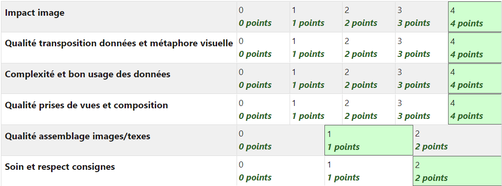

Contexte
Dans le cadre d'une SAE durant mon 3 ème semestre de BUT MMI, j'ai dû réaliser un poster sur l'une des neuf limites planétaires. Je me suis donc penché sur le sujet de la couche d'ozone. Afin de réaliser mon poster, j'ai utilisé le logiciel Illustrator. J'ai pris un parapluie que j'ai déchiré au fur et à mesure pour représenter la couche d'ozone qui se déchire. Le parapluie représentant la couche d'Ozone car métaphore de bouclier.
Logiciels utilisés
Illustrator
Compétences utilisées
-
Experience acquises
Quelques images
